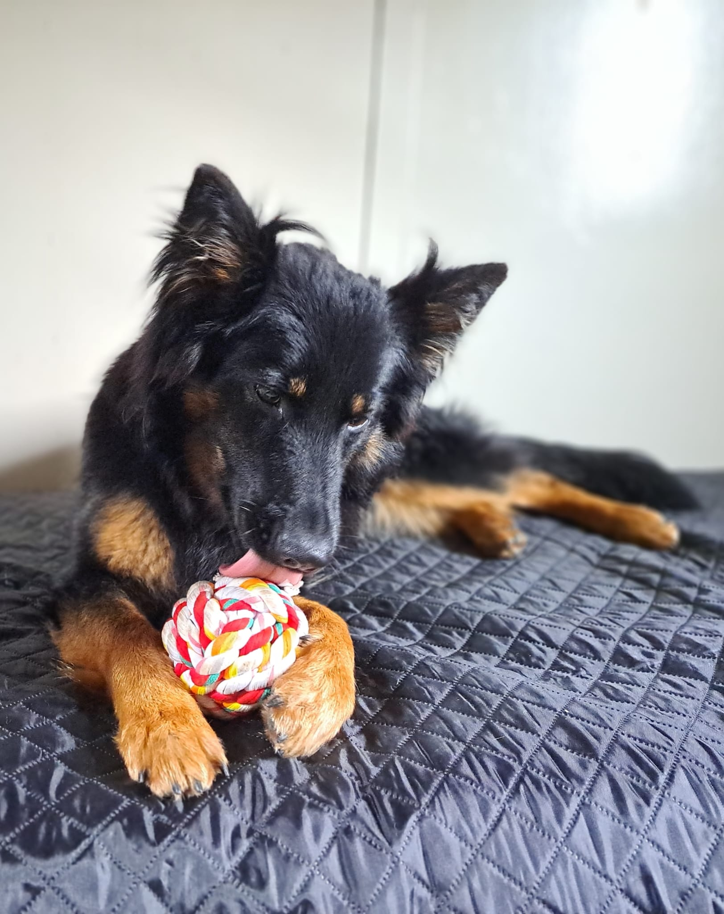

Naše cesta k chovu psů s průkazem původu se začala psát v podhůří Ještědu, v obci Šimonovice. Právě zdejší divoká a krásná příroda nám vnukla název pro naši chovatelskou stanici – Ještědský vítr.
Chodský pes nás okouzlil na první pohled svou typickou siluetou, elegantním pohybem a nádhernou bohatou srstí s korálovými znaky. To nejdůležitější se však skrývá v jeho povaze. Je to pes nesmírně věrný, učenlivý, nekonfliktní a vždy připravený splnit svému pánovi jakékoliv přání.
Naším hlavním chovatelským cílem není kvantita, ale kvalita a zdraví. Chceme odchovávat štěňátka, která budou dělat radost svým novým rodinám, budou zdravými parťáky na dlouhá léta a uchovají si ty nejlepší pracovní i exteriérové vlastnosti tohoto tradičního českého národního plemene.
